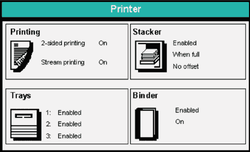
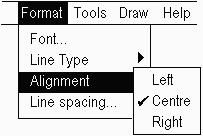

У цій статті ми подивимося на методи проектування і розробки, які можуть викликати серйозні проблеми для перекладу. Дизайнери мають бути дуже обережними з тим як вони розділяють і повторно використовують текст на екрані, тому що лінгвістичні відмінності між мовами можуть призвести до проблем для локалізаторів і в деяких випадках можуть унеможливити нормальний переклад.
Після розгляду концепцій та питань, пов'язаних із фрагментацією тексту і повторним використанням рядка, ми розглянемо що працює, а що не працює.
Складені Повідомленням динамічно складають одне повідомлення більш ніж з одного рядка тексту. Звичайною причиною для створення складених повідомлень є те що одна або більше частин складених повідомлень буде змінюватиметься відповідно до контексту.
Складені повідомлення, як правило, організовані за допомогою одного або двох способів: перший - механізм sentence-like; другий - механізм topic-comment.
Частини складеного повідомлення які змінюються, розглядаються тут як підрядки.
Наприклад нижче зображене складене повідомлення типу sentence-like. Цей механізм виражає ідею використання плинного sentence-like синтаксису. Як правило, це найбільш проблемний підхід.
| { | printer | } | ||
| The | stacker | has been disabled. | ||
| stapler options |
У цьому прикладі, дизайнер створив один рядок, для обслуговування спільних частин трьох речень, тобто The ... has been
disabled.. Також були створені три змінні підрядки, і один відповідний підставляється під час виконання, щоб створити відповідні
повідомлення для контексту.
Як правило, це популярна дія серед дизайнерів, оскільки зменшення ідентичних частин ряду повідомлень з'являється в одному рядку, щоб зменшити роботу авторів тексту, поліпшити узгодженість повідомлення та оптимізацію оперативної пам'яті.
На жаль, навіть якщо це працює в одній мові, це може виявитися складним або неможливим створити такі складені повідомлення в інших мовах через різні правила для структури речення, узгодження і так далі.
Проблема узгодження вже показана на Англійському прикладі. Якщо альтернативний рядок stapler options використовується
під час виконання, то слово has буде неправильним - повинно бути have.
Ключовим питанням є те, що, оскільки в даний час тільки один рядок містить слово has, він не може читати have коли це необхідно.
Часто це стає ще складнішою задачею, коли ми переводимо на інші мови. Наприклад, у Французькій мові слово the буде переведено як le, la, les, або l', в залежності від того, що відразу слідує. Крім того, слово disabled необхідно буде désactivé, désactivés, désactivée, désactivées, в залежності від статі і число суб'єкта. Навіть якщо б stapler options не
був одним із варіантів, і всі складені повідомлення виглядали би добре на Англійській, Французький перекладач зіткнувся би із нездійсненним завданням.
Механізми topic-comment встановлюють тему (subject) і потім встановлюють щось про неї (comment), як правило, коротко.
Наприклад: Printer: enabled. Зверніть увагу, що в цьому механізмі двокрапка дуже широко використовується, щоб відокремити тему і коментар.
Ось приклад, який показує деякі варіації на тему механізма topic-comment.

Теми - незмінні рядки, такі як: 2-sided printing, [Tray] 1, та Binder. Кожна тема
супроводжується одним із набору альтернативних (і попередньо визначених) рядків для коментарів. Наприклад, тема 2-sided printing супроводжується
коментарем On. Зверніть увагу, що тема та коментар знаходяться тут в окремих областях екрану, хоча це не завжди так.
Більшість вищенаведених повідомлень розділені на дві області відображення тексту. Однак, повідомлення з посиланням на binder, розділене на три області відображення - тобто, тема має два коментарі: binder є одночасно Enabled та On. Це цілком
допустимий підхід і він не становить жодної проблеми для перекладу.
Ось ще декілька прикладів topic-comment складених повідомлень.
Коментарі тут є також замінюваними текстовими підрядками, хоча в цьому випадку всі коментарі видно в той же час — тобто,
це приклад списку підрядків. У багатьох мовах такі слова як lighter та darker доведеться узгоджувати
з темою (Image quality) за родом.
Тут ми маємо справу з випадаючим меню, але концепції залишилися тими ж самими. Слова Left, Centre та Right є замінюваними текстовими підрядками та в багатьох мовах при перекладі мають узгоджуватися по темі Alignment.
 Alignment > Left/Centre/Right" width="203" height="136" />
Повідомлення в цьому наборі реалізовані у вигляді вбудованих змінних в батьківських рядках. Проте вони зберігають механізм topic-comment. Зверніть увагу, що в останньому рядку теми знову є два коментарі - тест як completed так і passed.
Directory: C:/Workgroup/Scan File name: MyFile.tif Image Quality: Text Original Size: Auto Resolution: 300 dpi Communication Test: Completed: Passed
Є декілька типів підрядка, кожен з яких вводить трохи різні вимоги до можливості перекладу. У цій статті ми будемо посилатися на наступні види підрядка:
Заздалегідь визначений, замінюваний текст. Заздалегідь визначені слова або фрази в наборі повідомлень що треба буде
перекласти, такі як слова printer, stacker або binder в прикладі вище.
Незамінюваний, визначений при виконанні текст. Незамінюваний і нечисловий рядок що створений
користувачем при виконанні або незамінювана назва, як у Помилка виникла при виконанні роботи %s, де %s - назва роботи як
зазначено користувачем.
Числовий. Числовий рядок що створений продуктом при виконанні або є одним із набору таких фіксованих
значень як Надруковані сторінки: %d, де %d кількість сторінок, які машина вже нарахувала до сих пір.
Графічний. Графічний обраний з числа альтернатив як частина складеного повідомлення, наприклад, символ лотка паперу, який вбудований в текст що пов'язаний з лотками для паперу. Він не є строго підрядком, але ми можемо розглядати його як такий, оскільки він може використовуватися аналогічним чином.
Наступні проблеми є спільною властивістю для sentence-like складних повідомлень. Оригінальний текст припускає звичайний порядок слів в реченні, і що порядок можливо доведеться змінити в іншій мові.
Одна спільна проблема виникає, коли компоненти складених повідомлень розкидані по різним областям відображення, що ускладнює легку зміну порядку цих компонентів.
Наступні приклади показують, складене повідомлення, частини якого для компоновки розділені між різними клітинками таблиці. (Пунктирна лінія показує межі клітинок.)
| Return web pages updated |
Щоб добре перекласти текст, перекладач можете переміщати його з однієї клітинки таблиці в іншу. Це може змінити початкове розташування встановлене дизайнером, який реалізував цю таблицю. Наприклад, порядок слів в Німецькій мові може привести до наступного перекладу:
| veränderte Webseiten abrufen. |
Якщо перекладач не в змозі змінити порядок повідомлення таким чином, то, можливо, для вирішення цієї проблеми він зможе використати механізм topic-comment. В іншому випадку, ймовірно, найкращим результатом буде дуже поганий переклад. Наприклад, текст може бути змінений в цільову мову для позначення:
| Time period for returned web pages: |
Повинна бути можливість змінювати порядок змінних в механізмах sentence-like і переміщати їх будь-яким чином по відношенню до тексту.
Наприклад, при програмуванні на PHP таким чином можна закодувати рядок "There were <number> spelling mistakes in file <filename>.":
printf( "There were %d spelling mistakes in file %s.", spellerrors, filename)
На жаль, якщо ви це зробите, і якщо перекладач робить переклад на Німецьку мову: "Datei
<filename> enthält <number> Rechtschreibfehler." це, ймовірно, призведе до помилки в коді. Це тому, що PHP не
дозволяє переставляти місцями значення змінних %d та %s.
Замість цього вам слід закодувати текст наступним чином:
printf( "There were %1\$d spelling mistakes in file %2\$s.", spellerrors, filename)
Це тепер дозволить перекладачеві, змінювати порядок змінних без введення потенційної помилки.
Змінний рядок, повторно інтегрований в код, читатиметься як:
printf( "Datei %2\$s enthält %1\$d Rechtschreibfehler.", spellerrors, filename)
Це питання аж ніяк не є характерним для PHP. Багато мов програмування дозволяють вам додавати унікальний ідентифікатор змінної, так що немає ніякої двозначності, коли змінні переміщуються. Ви повинні намагатися завжди користуватися перевагою цієї функції.
Може виникнути набагато серйозніша ситуація, наприклад, як наводиться далі:
print( "Retrieving last " ); print( desiredEntries ); print( " of " ); print( totalEntries ); print( " total log entries." );
Японський переклад поставить total log entries (записи в загальний журнал) на початку речення і last retrieving (останнє одержання) в
кінці. Набагато важливіше те, що було б необхідно змінити порядок print(desiredEntries) і print(totalEntries). (У наведеному нижче прикладі додані переклади, щоб допомогти вам побачити, як саме необхідно змінити порядок тексту.)
print( "エラーログ" ); // translation: 'error log'
print( totalEntries );
print( "件から最新" ); // translation: 'from last'
print( desiredEntries );
print( "件を取り出します。" ); // translation: 'retrieving'
Проблема в тому, що перекладачі, як правило, намагаються з вагомої причини нічого не змінювати окрім рядків в коді. В іншому випадку випадкове редагування можна спричинити серйозну помилку. Таким чином, перекладачеві, ймовірно, буде представлений наступний текст для перекладу:
1: "Retrieving last " 2: " of " 3: " total log entries."
Основним питанням тут є те, що перекладачеві необхідно буде редагувати код щоб розробити найбільш адекватний переклад на Японську мову. Це вкрай небажано. Крім того, існує також ризик того, що перекладач намагатиметься визначити початок і кінець таких повідомлень, особливо, якщо рядки йому дали окремо і не по порядку.
Відзначимо, що аналогічні проблеми виникають і в коді, який виглядає як наступний приклад. Навіть якщо це в одному друкованому реченні, це не покращує справи.
print( "Retrieving last " + requiredEntries + " of " + totalEntries + " total log entries." );
Кращим підходом було б використовувати функцію друку, що дозволяє визначити змінні, як частину рядка для друку. Наприклад:
print( "Retrieving last $requiredEntries of $totalEntries total log entries." );
Заздалегідь визначені, змінювані текстові підрядки в механізмі sentence-like можуть створити непереборні труднощі для перекладача через лінгвістичні властивості багатьох мовах.
Наступний приклад показує sentence-like батьківський рядок в який відповідний заздалегідь визначений підрядок буде вставлений під час виконання.
The %s has been disabled.
Під час виконання %s буде замінений на один із:
printer
stacker
stapler options
Проблему тут видно навіть Англійською мовою, оскільки слово has повинно бути have поряд з
підрядком stapler options. На Французькій, вищезазначені підрядки є, відповідно, жіночої однини, чоловічої однини і жіночої множини,
і потребуватимуть три різних переклади батьківського рядка:
L'imprimante a été désactivée.
Le module de reception a été désactivé.
Les options d'agrafage ont été désactivées.
Слово the також може бути la у Французькій мові якщо наступне слово жіночого роду і починається з
приголосної літери, а слово disabled потрібно перекласти désactivés для чоловічого множинного
іменника. Такі узгодження є надзвичайно поширеними в інших мовах, окрім Англійської або Японської та часто можуть бути більш складними, ніж у Французькій мові.
Ключовим питанням тут є те, що, оскільки у нас для перекладу є тільки один рядок, то не можливо застосовувати різні відповідні переклади в Французькій мові для батьківського рядка.
Така реалізація, ймовірно, виникла через спроби дизайнерів або розробників поліпшити ситуацію, але, на жаль відсутність знань про те, що трапилося б у перекладі, створило серйозну проблему для іноземних версій продукту.
Кращим підходом тут буде або використовувати окремі рядки, або використовувати такий механізм topic-comment, як Disabled
function: printer, і т.д. Відзначимо, що в останньому випадку слово disabled відноситься до function, і, отже, є
незмінним.
Відображення слова і концепції також можуть викликати проблеми. Візьмемо, наприклад, послідовність:
Turn on the %s.
Під час виконання %s буде замінений на один із:
printer
stacker
stapler options
У деяких мовах, відповідний переклад Turn on може змінюватись в залежності від того, що turned on (увімкнено). Наприклад,
в Іспанській мові його можна перекласти як такі різні терміни, як conectar, encender або activar. Там також буде чотири
можливих переклади слова the. Оскільки існує тільки один екземпляр початкового рядка, тому знову неможливо забезпечити
якісний переклад.
Ви завжди повинні намагатися забезпечити, щоб незмінюванна частина виражалася в якості теми.
Тут ми маємо на увазі конкретно текст, переданий під час виконання - такий, як назва файлу, назва завдання, ім'я людини і так далі - або неперекладні назви. Це не попередньо визначені замінювані підрядки.
Як правило, навіть в механізмах sentence-like, ці типи підрядка не викликають проблем із інтернаціоналізацією. Наприклад,
перекладені нижче речення не потрібно узгоджувати з текстовим підрядком оскільки тема речення (тобто в даному випадку file або section) вже визначена або чітко видно що вона відрізняється від підрядка.
The file <file_name> has been scanned.
The section <section_title> gives further information.
У лінгвістичних умовах, це працює тому, що текст змінної забезпечується в якості додатку до теми.
Рекомендується такі слова, як section та file додавати, а не виводити їх. Це допомагає перекладачеві зрозуміти сенс повідомлення.
Однак, існують винятки з цього правила. Якщо текстова змінна відноситься до person (людина), а не до object (об'єкт), то багато мов як і раніше потребуватимуть внесення змін до інших частин речення, в залежності від статі людини. Наприклад:
The patient <person's_name> is ready.
Іспанські переклади цього рядка можуть мати слідуючий вигляд:
El enfermo Richard está listo.
або
La enferma Julia está lista.
Інакше кажучи, вбудовані підрядки визначені під час виконання працюють в механізмах sentence-like тільки, якщо вони не відображають належний іменник. Для цих типів повідомлення краще використовувати механізми topic-comment.
Числові підрядки погано працюють в механізмах sentence-like.
У багатьох мовах слово, яке кваліфікується рядом змін, згідно з тим, як багато ми говоримо про нього. Візьміть, наприклад,
повідомлення %d pages were printed (сторінки були надруковані).
В Англійській мові, у разі, якщо тільки одна сторінка була надрукована pages were повинно стати page was. Іноді, вказавши %d page(s) printed автори намагаються обійти цю проблему.
На жаль, в інших мовах все не так просто. Наприклад, в Арабській мові є різні закінчення дієслова і іменника для однієї сторінки, двох сторінок і більше двох сторінок, тобто, вони мають два різних типи множини.
Російська мова ще складніша. Наведена нижче таблиця показує закінченнями для слова page в Російській мові , коли це пов'язано з різними номерами.
| Номера сторінок | Російське слово для 'page' |
|---|---|
| 1 | страница |
| 2-4 | страницы |
| 5-10 | страниц |
| 11-20 (не завжди) | страниц |
| 21 | страница |
| 22-24 | страницы |
| 25-30 | страниц |
| > 30 | Повторіть модель закінчень: від 1 до 10. |
В результаті, це дуже важко мати справу з такими повідомленнями, що виражені механізмом sentence-like. Тому краще,
завжди виражати повідомлення, що містять числа, в якості механізму topic-comment. У механізмі topic-comment, слово pages залишається незмінним. Еквівалентне значення Pages printed: %d на Російській мові наведене нижче.
Отпечатано страниц: %d
Якщо перекладач хоче змінити порядок розташування підрядків у повідомленні, має бути чітко зрозуміло який новий порядок встановлено.
Розглянемо наступний приклад:
%s near '%s' at line %d
Японський переклад цього може бути таким:
%d 行の％s近くに％s
Що не ясно, дивлячись на цей приклад - це те, що перекладач призначив заміну на протилежну двох змінних, що названі %s. Це, звичайно, не зрозуміло, для програмного забезпечення.
Тому є сенс використовувати унікальний ідентифікатор для кожної змінної в рядку. Ми вже бачили, що в PHP, наприклад, ви могли б одержати це кодуючи Англійську як:
%1\$s near '%2\$s' at line %3\$d
У Японській мові це:
%3\$d 行の％2\$s近くに％1\$s
Для перекладу перекладач повинен бути забезпечений значеннями, щоб асоціювати коментар із його темою.
Для багатьох мов, як правило, не можливо перекласти частину коментаря topic-comment повідомлення, якщо ви не знаєте що це за
тема. Слово enabled у Французькій мові перекладається одним з чотирьох різних способів, залежно від того, чи тема є чоловічого, жіночого роду,
одниною чи множиною:
| Topic (Тема) | Частина мови | Переклад слова 'enabled' |
|---|---|---|
| stacker | чоловічий, однина | activé |
| printer | жіночий, однина | activée |
| bar codes | чоловічий, множина | activés |
| stapler options | жіночий, множина | activées |
В інших мовах є багато інших можливостей, оскільки є більш двох родів і можуть бути відмінкові закінчення.
Якщо перекладачу потрібно перекласти саме по собі слово enabled, він або вона поняття не мають, як його
потрібно перекласти. Наприклад, з представленим перекладачу текстом в наступному порядку буде дуже важко впоратися.
enabled disabled enabled enabled disabled stacker printer enabled bar codes stacker disabled etc.
Єдиний спосіб вирішити це дозволить перекладачеві, подивитися на результат в завершеному інтерфейсі, а потім зробити зворотний переклад як необхідно. Це трудомісткий процес. Було б набагато краще переконатися, що перекладач може бачити відразу, як виглядають ці речі.
Є декілька способів, щоб цього досягнути:
Текст може бути впорядкований таким чином, що інтуїтивно було б ясно що і чому відповідає.
stacker enabled disabled stacker enabled disabled printer enabled disabled etc.
Відповідність можна вказати за допомогою ідентифікаторів повідомлення.
Дизайнери можуть використовувати якісь анотації, щоб надати цю інформацію.
Відмінності можуть бути також семантичного характеру. Наприклад, якщо тут використали слово on, а не enabled,
відповідний переклад на Іспанську мову може бути наступним encendida для printer, але activadas для stapler options. conectado - інший переклад слова on. Кожне з цих трьох слів також має чотири форми узгодження. Це дає 12 можливих варіантів перекладу.
Там де це можливо використовуйте підхід topic-comment. Topic-comment складені повідомлення добре працюють незалежно від того чи частини знаходяться на одному чи на декількох екранах, і з будь-яким типом підрядка.
Уникайте механізмів sentence-like, коли вони містять підрядки, що заздалегідь визначені як замінюваний текст або числових текст.
Якщо ви маєте нечислові і незмінні текстові підрядки, то будьте обережні при використанні механізмів sentence-like (тобто текст створений під час виконання). Не використовуйте, якщо підрядок є належним іменником. Окрім того, приміняйте такі sentence-like повідомлення в яких в процесі перекладу можна легко переміщати в будь-якому порядку текст і підрядки. При написанні програмного коду, для цього зазвичай використовують рядки форматування для виводу таким чином, що кожна змінна ідентифікована однозначно.
Там де частини складеного повідомлення з'являються в окремих місцях, забезпечте перекладача контекстною інформацією, щоб показати, як різні частини складеного повідомлення відносяться одна до одної - особливо до яких інших складових частин повідомлення відносяться які підрядки. Складові частини повідомлення, яким віддають перевагу повинні бути згруповані разом для доставки їх перекладачеві.
Там де це необхідно, забезпечте перекладачів інформацією, щоб уточнити, що собою представляє підрядок (наприклад щось схоже на "%s near '%s' at line %d" може створити проблему для перекладача). For this purpose, consider using the ITS Localization Note data category.
На прохання групи локалізації, надати інформацію про розмір кожного підрядка, щоб допомогти протестувати чи вписується переклад у фіксований розмір простору. For this purpose, consider using the ITS Storage Size attribute.
В іншій статті ми обговоримо ряд важливих речей, які слід мати на увазі, з точки зору повторного використання текстових рядків.
Повторне використання Рядків в Скриптовому Контенті Додаткові проблеми можуть виникнути, якщо підрядки повторно використовуються в більше ніж одному з батьківських рядків.
Глобалізація Крок за Кроком, Обробка Рядків Специфічна стаття Microsoft про обробку складених повідомлень в Win32 та .NET.
Related links, Authoring HTML & CSS